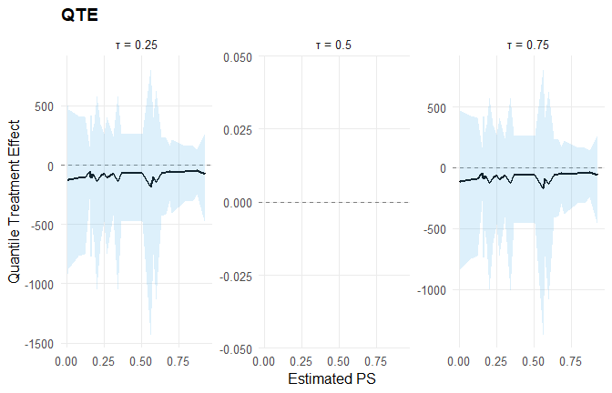

Customization: Build NIMBLE Models from Scratch
Source:vignettes/allin1/customization.Rmd
customization.RmdOverview
This vignette shows how to build NIMBLE models from
scratch using the exported d* / p* / q* / r*
nimbleFunctions in DPmixGPD, then walks through the
full pipeline (data -> constants -> inits -> code ->
compile -> run -> extract).
We cover three workflows:
-
SB case: manual stick-breaking Normal mixture using
dNormMix. - CRP + GPD case: build a CRP model with a GPD tail using DPmixGPD codegen, then run the manual NIMBLE steps explicitly.
- Causal model: build a causal model and use S3 methods for inference.
We use fast MCMC settings to keep this vignette lightweight. Increase the iterations if you want more stable posterior summaries.
Data
data("mtcars", package = "datasets")
df <- mtcars
y <- df$mpg
X <- df[, c("wt", "hp")]
X <- as.data.frame(X)SB Case: Manual Stick-Breaking Model with dNormMix
This section shows a from-scratch SB model that uses
the exported dNormMix nimbleFunction directly as a
likelihood. We register it as a custom NIMBLE distribution and then
build the model step by step.
Note on custom likelihoods
To keep the model fully NIMBLE-compatible without registering a
custom distribution, we use a zeros-trick likelihood
based on the exported dNormMix nimbleFunction.
NIMBLE code
code_sb <- nimble::nimbleCode({
alpha ~ dgamma(1, 1)
for (k in 1:(K - 1)) {
v[k] ~ dbeta(1, alpha)
}
v[K] <- 1
w[1] <- v[1]
for (k in 2:K) {
w[k] <- v[k] * prod(1 - v[1:(k - 1)])
}
for (k in 1:K) {
mu[k] ~ dnorm(0, sd = 5)
sigma[k] ~ dunif(0.1, 5)
}
for (i in 1:N) {
loglik[i] <- dNormMix(y[i], w[1:K], mu[1:K], sigma[1:K], log = 1)
zeros[i] ~ dpois(-loglik[i] + C)
}
})Compile and run (manual)
Rmodel_sb <- nimble::nimbleModel(
code = code_sb,
constants = constants_sb,
data = data_sb,
inits = inits_sb()
)
conf_sb <- nimble::configureMCMC(
Rmodel_sb,
monitors = c("alpha", "v", "w", "mu", "sigma")
)
Rmcmc_sb <- nimble::buildMCMC(conf_sb)
Cmodel_sb <- nimble::compileNimble(Rmodel_sb, showCompilerOutput = FALSE)
Cmcmc_sb <- nimble::compileNimble(Rmcmc_sb, project = Rmodel_sb, showCompilerOutput = FALSE)
samples_sb <- nimble::runMCMC(
Cmcmc_sb,
niter = mcmc$niter,
nburnin = mcmc$nburnin,
thin = mcmc$thin,
nchains = mcmc$nchains,
setSeed = mcmc$seed
)Sample extraction
head(samples_sb[, 1:min(6, ncol(samples_sb))])
#> alpha mu[1] mu[2] mu[3] sigma[1] sigma[2]
#> [1,] 0.334 19.8 7.67 -12.3 4.97 4.74
#> [2,] 0.334 21.2 6.94 -12.5 4.97 3.09
#> [3,] 0.208 20.7 7.85 -12.8 4.97 3.90
#> [4,] 0.208 18.7 8.22 -15.7 4.97 1.89
#> [5,] 0.200 20.4 6.55 -14.0 4.90 4.43
#> [6,] 0.200 19.7 6.78 -12.9 4.90 3.60
summary(samples_sb[, c("alpha", "mu[1]", "mu[2]", "mu[3]")])
#> alpha mu[1] mu[2] mu[3]
#> Min. :0.0152 Min. :17.8 Min. :-10.52 Min. :-15.720
#> 1st Qu.:0.2478 1st Qu.:18.9 1st Qu.: -1.71 1st Qu.: -5.422
#> Median :0.3672 Median :19.5 Median : 1.53 Median : -0.872
#> Mean :0.5371 Mean :19.5 Mean : 2.33 Mean : -1.188
#> 3rd Qu.:0.6679 3rd Qu.:20.1 3rd Qu.: 6.27 3rd Qu.: 3.185
#> Max. :2.1702 Max. :21.8 Max. : 15.12 Max. : 12.389Optional: S3 methods via the DPmixGPD bundle
For comparison, we build a bundle for the same SB Normal mixture and use DPmixGPD’s S3 methods for posterior inference.
bundle_sb <- build_nimble_bundle(
y = y,
X = NULL,
backend = "sb",
kernel = "normal",
GPD = FALSE,
components = K,
mcmc = mcmc
)
fit_sb <- run_mcmc_bundle_manual(bundle_sb, show_progress = FALSE)
print(bundle_sb)
#> DPmixGPD bundle
#> Field Value
#> Backend Stick-Breaking Process
#> Kernel Normal Distribution
#> Components 3
#> N 32
#> X NO
#> GPD FALSE
#> Epsilon 0.025
#>
#> contains : code, constants, data, dimensions, inits, monitors
summary(bundle_sb)
#> DPmixGPD bundle summary
#> Field Value
#> Backend Stick-Breaking Process
#> Kernel Normal Distribution
#> Components 3
#> N 32
#> X NO
#> GPD FALSE
#> Epsilon 0.025
#>
#> Parameter specification
#> block parameter mode level prior link
#> meta backend info model sb
#> meta kernel info model normal
#> meta components info model 3
#> meta N info model 32
#> meta P info model 0
#> concentration alpha dist scalar gamma(shape=1, rate=1)
#> bulk mean dist component (1:3) normal(mean=0, sd=5)
#> bulk sd dist component (1:3) gamma(shape=2, rate=1)
#> notes
#>
#>
#>
#>
#>
#> stochastic concentration
#> iid across components
#> iid across components
#>
#> Monitors
#> n = 5
#> alpha, w[1:3], z[1:32], mean[1:3], sd[1:3]
print(fit_sb)
#> MixGPD fit | backend: Stick-Breaking Process | kernel: Normal Distribution | GPD tail: FALSE
#> n = 32 | components = 3 | epsilon = 0.025
#> MCMC: niter=600, nburnin=150, thin=2, nchains=1
#> Fit
#> Use summary() for posterior summaries; plot() for diagnostics; predict() for predictions.
summary(fit_sb)
#> MixGPD summary | backend: Stick-Breaking Process | kernel: Normal Distribution | GPD tail: FALSE | epsilon: 0.025
#> n = 32 | components = 3
#> Summary
#> Initial components: 3 | Components after truncation: 1
#>
#> WAIC: 206.205
#> lppd: -96.539 | pWAIC: 6.564
#>
#> Summary table
#> parameter mean sd q0.025 q0.500 q0.975 ess
#> weights[1] 0.964 0.065 0.8 1 1 3.52
#> alpha 0.71 0.507 0.086 0.597 1.979 39.228
#> mean[1] 19.309 1.085 17.274 19.421 21.381 128.073
#> sd[1] 0.031 0.008 0.017 0.031 0.047 180.677CRP + GPD Case: Manual Pipeline with Codegen
This example uses CRP + Amoroso + GPD, but we still walk through the manual NIMBLE steps (constants, inits, code, compile, run). The generated NIMBLE code calls DPmixGPD’s GPD kernels under the hood.
Specification
param_specs_crp <- list(
bulk = list(
loc = list(
mode = "link",
link = "identity",
beta_prior = list(dist = "normal", args = list(mean = 0, sd = 2))
),
scale = list(
mode = "link",
link = "identity",
beta_prior = list(dist = "normal", args = list(mean = 0, sd = 2))
),
shape1 = list(mode = "fixed", value = 1)
),
gpd = list(
threshold = list(
mode = "link",
link = "exp",
beta_prior = list(dist = "normal", args = list(mean = 0, sd = 0.2))
),
tail_scale = list(
mode = "link",
link = "exp"
)
)
)Build bundle and extract pieces
bundle_crp <- build_nimble_bundle(
y = y,
X = X,
backend = "crp",
kernel = "amoroso",
GPD = TRUE,
components = 5,
param_specs = param_specs_crp,
mcmc = mcmc
)
code_crp <- bundle_crp$code$nimble
constants_crp <- bundle_crp$constants
data_crp <- bundle_crp$data
inits_crp <- if (is.function(bundle_crp$inits_fun)) bundle_crp$inits_fun else bundle_crp$initsCompile and run (manual)
samples_crp <- NULL
crp_err <- NULL
tryCatch({
Rmodel_crp <- nimble::nimbleModel(
code = code_crp,
constants = constants_crp,
data = data_crp,
inits = if (is.function(inits_crp)) inits_crp() else inits_crp
)
conf_crp <- nimble::configureMCMC(
Rmodel_crp,
monitors = bundle_crp$monitors
)
if (!is.null(conf_crp$samplerConfs) && length(conf_crp$samplerConfs) > 0) {
for (i in seq_along(conf_crp$samplerConfs)) {
ctl <- conf_crp$samplerConfs[[i]]$control
if (is.null(ctl)) ctl <- list()
if (is.null(ctl$checkConjugacy)) ctl$checkConjugacy <- FALSE
conf_crp$samplerConfs[[i]]$control <- ctl
}
}
Rmcmc_crp <- nimble::buildMCMC(conf_crp)
Cmodel_crp <- nimble::compileNimble(Rmodel_crp, showCompilerOutput = FALSE)
Cmcmc_crp <- nimble::compileNimble(Rmcmc_crp, project = Rmodel_crp, showCompilerOutput = FALSE)
samples_crp <- nimble::runMCMC(
Cmcmc_crp,
niter = mcmc$niter,
nburnin = mcmc$nburnin,
thin = mcmc$thin,
nchains = mcmc$nchains,
setSeed = mcmc$seed
)
}, error = function(e) {
crp_err <<- conditionMessage(e)
})S3 methods for posterior inference
fit_crp <- NULL
crp_fit_err <- NULL
tryCatch({
fit_crp <- run_mcmc_bundle_manual(bundle_crp, show_progress = FALSE)
}, error = function(e) {
crp_fit_err <<- conditionMessage(e)
})Causal Model: From Bundle to S3 Inference
We build a causal model using SB backends for treated and control
arms. This uses the same fast MCMC settings and then demonstrates
ate() and qte().
X_causal <- df[, c("wt", "hp", "qsec", "cyl")]
X_causal <- as.data.frame(X_causal)
T_ind <- df$am
param_specs_causal <- list(
trt = list(
bulk = list(
mean = list(
mode = "link",
link = "identity",
beta_prior = list(dist = "normal", args = list(mean = 0, sd = 2))
),
sd = list(
mode = "dist",
dist = "invgamma",
args = list(shape = 2, scale = 1)
)
)
),
con = list(
bulk = list(
location = list(
mode = "link",
link = "identity",
beta_prior = list(dist = "normal", args = list(mean = 0, sd = 2))
),
scale = list(
mode = "dist",
dist = "gamma",
args = list(shape = 2, rate = 1)
)
)
)
)
causal_bundle <- build_causal_bundle(
y = y,
X = X_causal,
T = T_ind,
backend = "sb",
kernel = c("normal", "laplace"),
GPD = FALSE,
components = 5,
param_specs = param_specs_causal,
PS = "logit",
design = "observational",
mcmc_outcome = mcmc,
mcmc_ps = mcmc
)
causal_fit <- run_mcmc_causal(causal_bundle, show_progress = FALSE)
print(causal_bundle)
#> DPmixGPD causal bundle
#> PS model: Bayesian logit (T | X)
#> Outcome (treated): backend = sb | kernel = normal
#> Outcome (control): backend = sb | kernel = laplace
#> GPD tail (treated/control): FALSE / FALSE
#> components (treated/control): 5 / 5
#> Outcome PS included: TRUE
#> epsilon (treated/control): 0.025 / 0.025
#> n (control) = 19 | n (treated) = 13
summary(causal_bundle)
#> DPmixGPD causal bundle summary
#> DPmixGPD causal bundle
#> PS model: Bayesian logit (T | X)
#> Outcome (treated): backend = sb | kernel = normal
#> Outcome (control): backend = sb | kernel = laplace
#> GPD tail (treated/control): FALSE / FALSE
#> components (treated/control): 5 / 5
#> Outcome PS included: TRUE
#> epsilon (treated/control): 0.025 / 0.025
#> n (control) = 19 | n (treated) = 13
print(causal_fit)
#> DPmixGPD causal fit
#> PS model: Bayesian logit (T | X)
#> Outcome (treated): backend = sb | kernel = normal
#> Outcome (control): backend = sb | kernel = laplace
#> GPD tail (treated/control): FALSE / FALSE
summary(causal_fit)
#> -- PS fit --
#> DPmixGPD PS fit
#> model: logit
#>
#> -- Outcome fits --
#> [control]
#> MixGPD fit | backend: Stick-Breaking Process | kernel: Laplace Distribution | GPD tail: FALSE
#> n = 19 | components = 5 | epsilon = 0.025
#> MCMC: niter=600, nburnin=150, thin=2, nchains=1
#> Fit
#> Use summary() for posterior summaries; plot() for diagnostics; predict() for predictions.
#>
#> [treated]
#> MixGPD fit | backend: Stick-Breaking Process | kernel: Normal Distribution | GPD tail: FALSE
#> n = 13 | components = 5 | epsilon = 0.025
#> MCMC: niter=600, nburnin=150, thin=2, nchains=1
#> Fit
#> Use summary() for posterior summaries; plot() for diagnostics; predict() for predictions.
pred_causal_mean <- predict(causal_fit, x = X_causal, type = "mean", interval = "credible")
head(pred_causal_mean)
#> ps estimate lower upper
#> Mazda RX4 0.510 -69.7 -472 258
#> Mazda RX4 Wag 0.367 -69.8 -471 259
#> Datsun 710 0.667 -64.1 -407 226
#> Hornet 4 Drive 0.253 -71.9 -472 263
#> Hornet Sportabout 0.270 -100.5 -744 410
#> Valiant 0.162 -70.0 -450 255
ate_result <- ate(causal_fit, interval = "credible", nsim_mean = 50)
qte_result <- qte(causal_fit, probs = c(0.25, 0.5, 0.75), interval = "credible")
print(ate_result)
#> ATE (Average Treatment Effect)
#> Prediction points: 32
#> Conditional (covariates): YES
#> Propensity score used: YES
#> PS scale: logit
#> Posterior mean draws: 50
#> Credible interval: credible (95%)
#>
#> ATE estimates (treated - control):
#> id estimate lower upper
#> 1 -69.666 -472.808 259.427
#> 2 -69.77 -471.225 259.738
#> 3 -64.09 -407.736 227.162
#> 4 -71.852 -472.88 262.884
#> 5 -100.504 -745.447 412.265
#> 6 -69.906 -451.745 255.4
#> ... (26 more rows)
summary(ate_result)
#> ATE Summary
#> ==================================================
#> Prediction points: 32
#> Conditional: YES | PS used: YES
#> Posterior mean draws: 50
#> Interval: credible (95%)
#>
#> Model specification:
#> Backend (trt/con): sb / sb
#> Kernel (trt/con): normal / laplace
#> GPD tail (trt/con): NO / NO
#>
#> ATE statistics:
#> Mean: -87.807 | Median: -76.782
#> Range: [-174.449, -45.503]
#> SD: 30.693
#>
#> Credible interval width:
#> Mean: 978.617 | Median: 812.036
#> Range: [371.937, 2227.255]
try({
plot(ate_result, type = "effect")
plot(qte_result, type = "effect")
}, silent = TRUE)